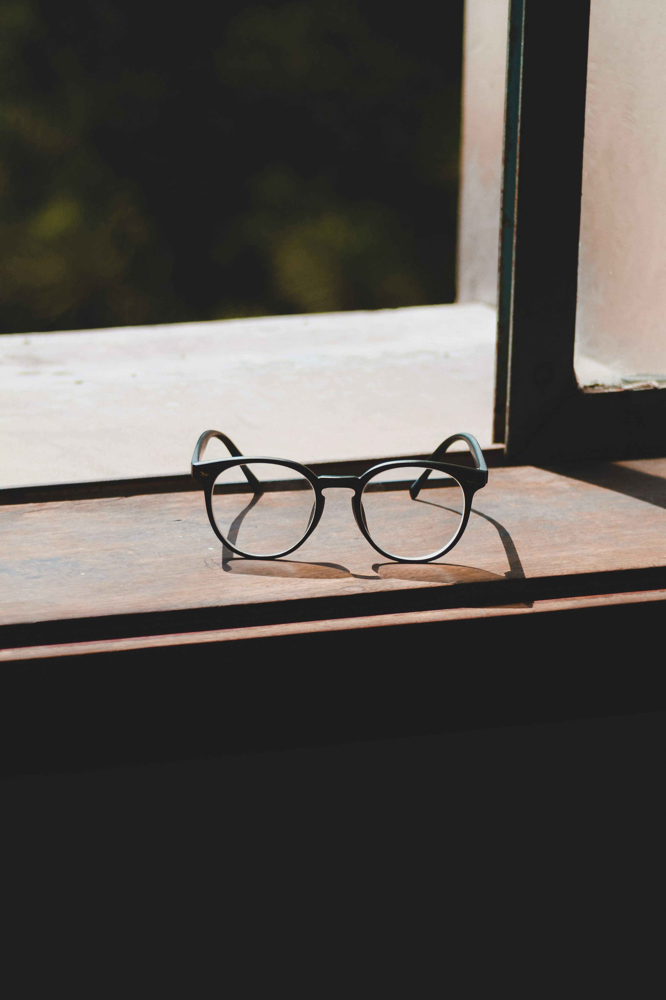

A FRAME FOR THE EVERYDAY
A little light.
A different
perspective.
Familiar curves. A quiet presence.
Meet the round optical frame from Morrow.

THE FEATURED FRAME
The Round / Ink
S$120 Sample price
THE MORNING STUDY — 01
A fictional campaign / DemoA FRAME FOR THE EVERYDAY
Familiar curves. A quiet presence.
Meet the round optical frame from Morrow.

THE FEATURED FRAME
S$120 Sample price